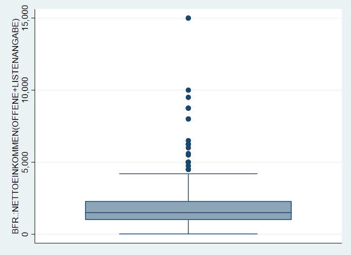
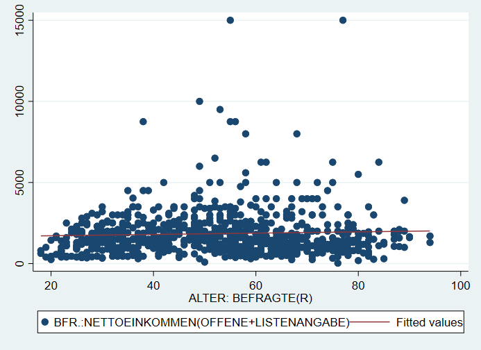
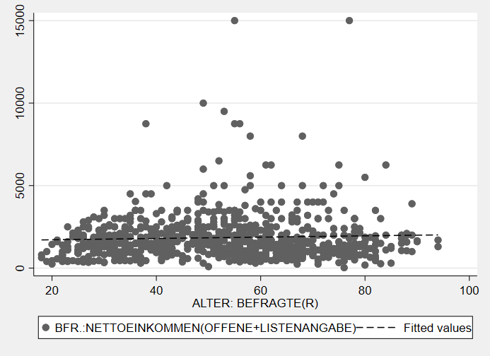
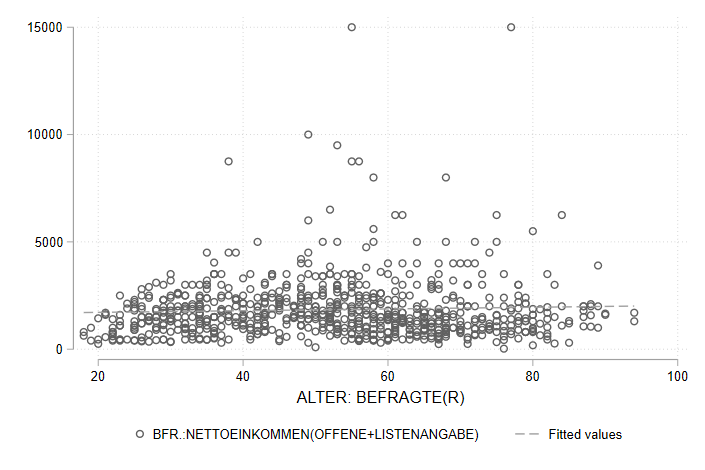
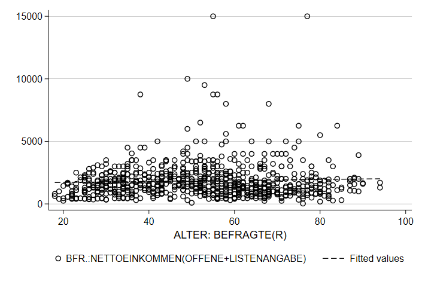
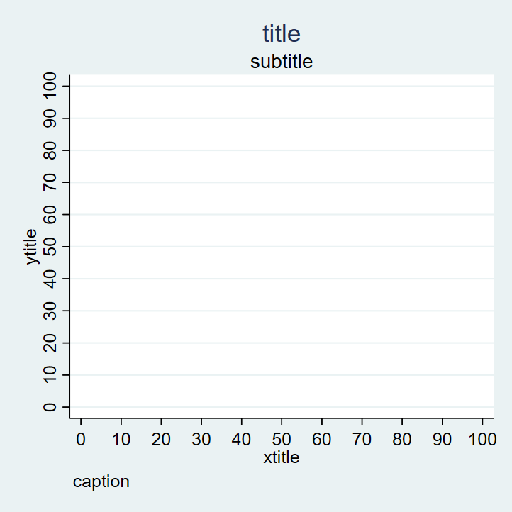
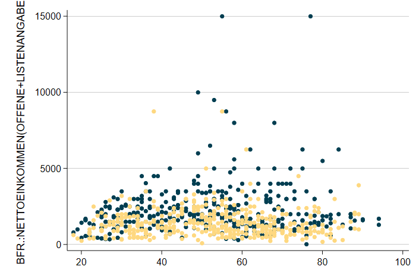
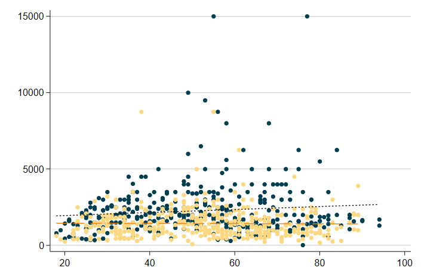

4 Datenvisualisierung in Stata
Wir starten wie immer mit dem Einlesen eines Datensatzes:
Für Grafiken gilt noch mehr als für alle anderen Aspekte in Stata: ausprobieren und sehen, was passiert! Nachdem in der Regel ja zumindest eine ungefähre Vorstellung existiert, wie die zu erstellende Grafik aussehen soll, sind Grafik-Gallerieren ein guter Startpunkt das eigene Trial & Error. Die größte Herausforderung ist häufig, eine Vorstellung zu entwickeln, wie die Darstellung aussehen soll.
Eine Übersicht zu allen verfügbaren Visualierungen inklusive Beispielbefehlen findet sich beispielsweise hier oder hier.
4.1 Erste Entscheidungen
- Wie viele Variablen sollen dargestellt werden?
- Die Verteilung einer Variable

- Die Verteilung einer Variable, aufgeteilt nach einer zweiten Variablen
- Die gemeinsame Verteilung zweier (oder mehrer) Variablen
4.2 Grafik-Syntax in Stata
Die Syntax für Graphiken in Stata unterscheidet sich vom dem bisher Kennengelernten.
4.2.1 Aufbau
Grafik-Befehle bestehen aus zwei Teilen: dem Befehl graph und der Angabe eines Grafik-Typs. Im folgenden Befehl ist box der Grafik-Typ:

4.2.2 twoway
Beim Grafik-Typ twoway muss der sog. Plottyp, spezifiziert werden. Bspw. für ein Streudiagramm mit dem Befehl scatter:

4.2.3 Kombinieren von zwei twoway-Grafiken
twoway-Grafiken können übereinander gelegt werden. So können wir durch Kombination der Plottypen scatter und lfit ein Streudiagram mit einer Regressionsgerade1 kombinieren:
graph twoway (scatter inc age) (lfit inc age)
Eine alternative Schreibweise mit || führt zur gleichen Grafik:
graph twoway scatter inc age || lfit inc age

4.2.4 twoway Varianten
graph twoway scatter hatten wir jetzt schon kennen gelernt. Natürlich gibt es aber auch noch weitere Darstellungsformen.
graph twoway bar liefert uns ein Säulendiagramm:
Mit der Option ,horizontal können wir dieses Säulendiagramm in ein Balkendiagramm mit horizontalen Balken verwandeln:
Mit graph twoway connected bekommen wir ein Punktdiagramm mit verbundenen Punkten
4.2.5 Vorlagen
Das Aussehen von Grafiken wird durch sog. Grafik-Schemata beeinflusst. Beispielsweise wird mit , scheme(sj) die Grafik nach den Vorlage des Stata Journals erstellt:

Mit graph query, schemes wird eine Liste der verfügbaren Schemata angezeigt.
Weitere Optionen bieten zB die blindschemes von Daniel Bischof oder lean2 von Svend Juul. Beide müssen zunächst mit ssc install blindschemes bzw. net install gr0002_3, from("http://www.stata-journal.com/software/sj4-3") installiert werden und stehen dann zur Verfügung, zB
Hier noch ein Beispiel mit plotplain aus blindschemes:

…und lean2:

4.3 Optionen
Darüber hinaus stehen eine ganze Reihe an Anpassungsmöglichkeiten zur Verfügung
4.3.1 Beschriftungen
Eine klare Beschriftung ist zentraler Bestandteil jeder Datenvisualisierung. Im wesentlichen
Folgende Überschriften stehen uns dazu zur Verfügung: title("title") subtitle("subtitle") xtitle("xtitle") ytitle("ytitle") caption("caption")

legendpos- labeln
overDarstellungstypen
- Symbole/Linientypen
Farboptionen
mcolor,lcolor,graphregion(color(orange))
Optionen von graph können Unteroptionen haben oder aus einer Liste von Optionen zusammengesetzt werden. Hier zwei Beispiele: xlabel(#20, angle(90)) oder xscale(range(0 300) reverse alt).
4.3.2 Farben
Obwohl es um Darstellungen geht, haben wir noch sehr wenig über Farben gesprochen.
4.3.3 Subgruppen
graph twoway ( scatter inc age if sex == 1 , mc("0 62 81") msymbol(o) ) ( scatter inc age if sex == 2 , mc("254 216 128") msymbol(o) ) ///
graph twoway ( scatter inc age if sex == 1 , mc("0 62 81") msymbol(o) ) ( scatter inc age if sex == 2 , mc("254 216 128") msymbol(o) ) ( lfit inc age if sex == 1 , lc("black") ) ( lfit inc age if sex == 2 , lc("orange") msymbol(o) ) ///
4.4 Beispiele zum selbst anpassen
Im Folgenden
Was gut aussieht ist natürlich subjektiv….
4.4.1 Boxplot
Hier noch ein Beispiel mit (sehr) vielen Optionen als Vorlage für eigene Anpassungen (DoFile):
graph box inc_m inc_f, over(age_c) scheme(lean1) box(1, color("0 41 93")) marker(1, mcolor("0 41 93") msymbol("o") ) medline(lcolor("204 175 105")) box(2, color("146 143 107")) marker(2, mcolor("146 143 107") msymbol("o") ) legend(cols(2) pos(12) region(fcolor("249 247 241") lcolor("16 74 138"))) ytitle("{stSerif:Einkommen}{superscript:2018}") b1title("Alter") title("Einkommen") caption("{bf:Quelle}: Allbus 2018 {it:eigene Berechnungen}",position(5)) plotregion(fcolor("252 251 248")) graphregion(fcolor("249 247 241")) 
Auch die Darstellung auf der Startseite dieses Skripts wurde als Stata-Grafik erstellt:
graph twoway (lfit bp_before bp_after) ( scatter bp_before bp_after if agegrp == 1, mc("0 62 81") msymbol(o) ) ( scatter bp_before bp_after if agegrp == 2, mc("0 125 186") msymbol(o) ) ( scatter bp_before bp_after if agegrp == 3, mc("214 210 196") msymbol(o) ), scheme(lean2) legend(off) xtitle("")
Häufig ist die größte Herausforderung, die Daten so umzustellen, dass sie zum gewünschten graph-Befehl passen. Ein Beispiel ist die Erstellung einer Bevölkerungspyramide aus den Allbusdaten:
4.5 Bevölkerungspyramide

Auch eine Bevölkerungspyramide lässt sich als Stata-Grafik erstellen. Allerdings müssen dazu einige Zwischenschritte durchlaufen, die fortgeschrittene Datenaufbereitung mit collapse voraussetzen. Außerdem könnte ein Teil der Aufbereitung mit reshape abgekürzt werden. Mehr Informationen dazu finden sich am Ende dieses Skripts in Kapitel 11.
Die grundsätzliche Funktion für die Bevölkerungspyramide ist ein Balkendiagramm mit graph twoway bar , horizontal. Die Länge der Balken soll jeweils durch die Anzahl der Fälle in jeder Altersstufe, getrennt nach Geschlecht, bestimmt werden. Dazu müssen wir also zunächst die Anzahl der Befragten pro Alterstufe und Geschlecht bestimmen. Wenn wir den Allbus 2018 laden, haben wir ja einen Datensatz mit einer Zeile pro Person. Was wir jetzt aber benötigen ist eine Variante, in der wir den Datensatz sozusagen “zusammenschieben”: wir brauchen jeweils eine Zeile pro Altersstufe und Geschlecht und eine Variable mit der Zahl der Befragten.
Error in a18 %>% filter(age > 0, sex > 0) %>% group_by(age, sex) %>% count(name = "Anzahl_Befragte") %>% : konnte Funktion "%>%" nicht findenUm dorthin zu kommen, steht uns der collapse-Befehl zur Verfügung:
cd ""
use "Allbus_2018.dta", clear
tab agec
keep if sex > 0
keep if agec > 0
collapse (count) respid , by(sex age)
list in 1/8Unter respid ist jetzt die Zahl der Befragten in der jeweiligen Kombination aus age und sex abgelegt:
Error in a18 %>% filter(age > 0, sex > 0) %>% group_by(age, sex) %>% count(name = "respid") %>% : konnte Funktion "%>%" nicht findenUm verwirrung zu vermeiden, benennen wir respid in total um:
Allerdings möchten wir jetzt die Angaben für Frauen und Männer in getrennte Variablen ablegen:
Error in a18 %>% filter(age > 0, sex > 0) %>% group_by(age, sex) %>% count(name = "total") %>% : konnte Funktion "%>%" nicht findenJetzt können wir daraus ein Balkendiagramm erstellen:
 Was hier noch fehlt ist, die Umorientierung der Zahlen für die Männer “nach links”. Dazu multiplizieren wir
Was hier noch fehlt ist, die Umorientierung der Zahlen für die Männer “nach links”. Dazu multiplizieren wir total_m mit -1:
Damit dann verwenden wir neg_total_m für die Balken der Männer:
 Mit
Mit xlabel und legendnoch einige Anpassungen, außerdem können wir mit text noch Beschriftungen hinzufügen:
twoway( bar neg_total_m age, horizontal )(bar total_f age, horizontal) ,xlabel( -40 "40" -30 "30" -20 "20" -10 "10" 0 10(10)40 ) legend(off) text(100 -8 "Männer") text(100 8 "Frauen")
4.6 Anhang
4.6.1 Aufbereitung für Boxplot
4.6.2 separate
separate ist eine Abkürzung, um Angaben einer Variable entlang der Ausprägungen einer zweiten Variablen aufzuteilen. Das hilft uns bspw. die Aufteilung von inc nach dem Geschlecht (sex) zu vereinfachen. Wir können dies entweder mit zwei Befehlen mit gen und if durchführen oder diese zwei Schritte mit einem separate Befehl durchführen:
gen inc_m = inc if sex == 1
gen inc_f = inc if sex == 2
separate inc, by(sex)
list inc sex inc_m inc_f inc1 inc2 in 1/10 variable age_c not found
r(111);
(1,704 missing values generated)
(1,773 missing values generated)
storage display value
variable name type format label variable label
--------------------------------------------------------------------------------
inc1 int %17.0g inc inc, sex == MANN
inc2 int %17.0g inc inc, sex == FRAU
+-----------------------------------------------------------+
| inc sex inc_m inc_f inc1 inc2 |
|-----------------------------------------------------------|
|-----------------------------------------------------------|
+-----------------------------------------------------------+Was das genau ist, werden wir am Donnerstag besprechen. Für den Moment nur so viel: die Gerade gibt den Zusammenhangstrend beider Variablen wieder.↩︎